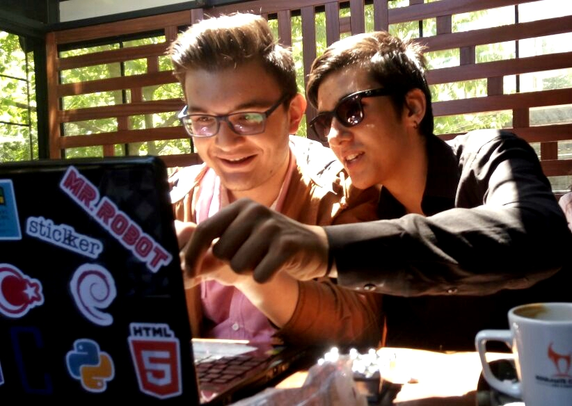

| Anasayfa | Hakkımda | İletişim |
Merhaba Sevgili Ziyaretçim, Ben Alpay. 30.09.1999 tarihinde doğdum. Afyonkarahisarda yaşıyorum. Lise öğrencisiyim. Küçüklüğümden beri bilim,sanat ve teknolojiye ilgi duyuyorum. İlk bilgisayar programımı 4.sınıfta yazdım. Bilgisayar haricinde elektronik,müzisyenlik,fotoğrafçılık,grafik tasarım,yazarlık,resim,motivasyon konuşmaları ve dublajla uğraşıyorum. Kendi şirketimin sahibiyim. Kendimi bildim bileli herşeyi merak eder araştırırım. Yeni şeyler ortaya çıkartmayı seven biriyim. Genç girişimcilerin öncüsü olarak "Dünyayı Değiştirmek" hayaliyle çalışan ve hayatını ortaya koyan kişiyim. 
|
||